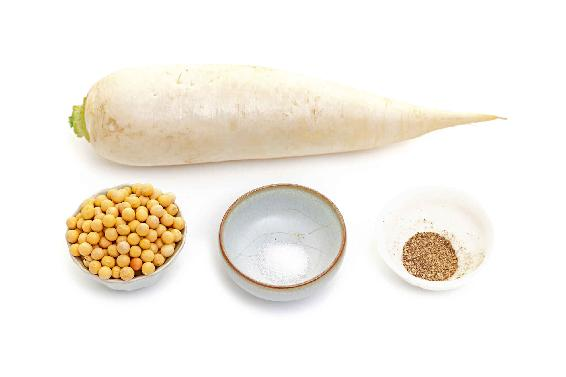
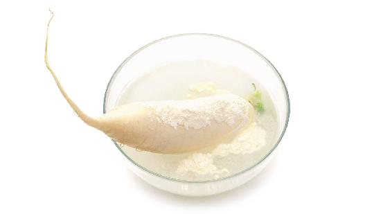
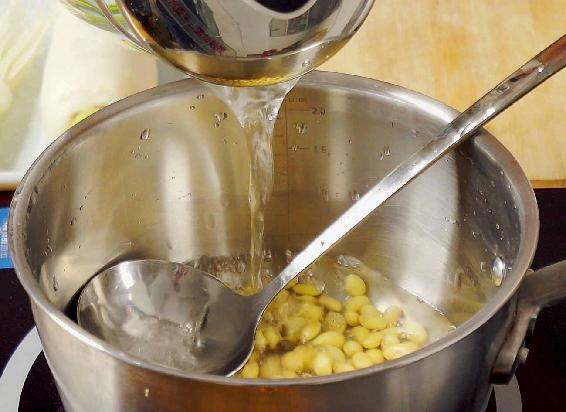
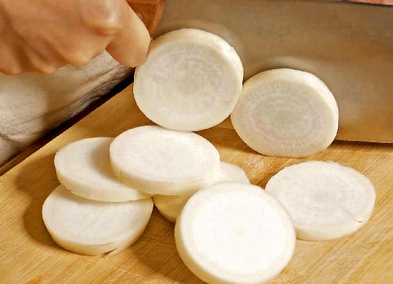
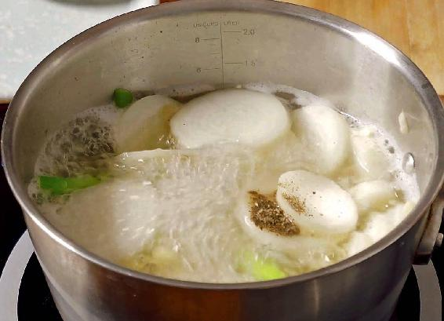

惊蛰节气的“蛰”是动物冬眠的意思，动物冬天藏在洞穴里，不吃也不动，这就是蛰。
许慎的《说文解字》解释：“蛰，藏也。”《尔雅》解释：“蛰，静也。”意思是在冬天，动物都收藏了，人也要收藏了，要好好地静养。
惊蛰节气到了，蛰伏了一冬的动物都出洞了，人也不需要静养，不能窝在家里，要动养了，要出门多活动活动。
“动则生阳”，春天我们一定要多运动，这样才能顺应天地之间的阳气，让身体得到补益。
现代人的一个通病就是不怎么动，导致现在阳虚的人特别多。要想补好身体的阳虚，就得顺应天时。
如果您平时喜欢锻炼，现在可以放开来锻炼了；如果您平时不喜欢锻炼，到了春天也要多出去散散步、走走路，千万不要错过这个给身体补阳气的好时机。
有朋友问，为什么是惊蛰呢？为什么不是出蛰、蛰出呢，而是要惊动动物和虫子呢？因为“惊”表示这时候已经有了雷声，雷声把动物给惊动了，它们才出洞穴了。
天冷的时候一般是不会打雷的，只有天气暖和，地气也开始回暖了，地表上的水才会被蒸发，形成很多的云。云和云之间产生了阴阳的电荷，摩擦而产生了雷。因此，我们一般到惊蛰节气才会听到雷声。“一雷惊蛰始，微雨众卉新”讲的就是这种景象。
打雷必然会带来雨，所以古人也有一句老话：“惊蛰闻雷米如泥。”如果您在惊蛰节气前后听到天上打雷了，往往是个好兆头，预示着今年的稻米会丰收，米会多得像地上的泥土一样。
这个是有科学根据的，因为在打雷闪电的时候，空气中的氧气和氮气会产生化合物，然后随雨滴落到地上，土壤中就会含有大量的氮肥，而且这种天然的氮肥是很容易被庄稼吸收的。
如果您是喜欢踏青、采摘野菜的朋友，惊蛰节气的雷雨天后，您出门到山里头看看，野菜这时候长得特别好。
从惊蛰节气开始，农民就要忙春耕了。因为上有艳阳天照耀着，下有土壤中含有的雷雨形成的大量氮肥，这是植物生发最好的时候。
在春天，要让人体多多地生发，首先是晒太阳，其次是给身体施“肥”。这个肥从哪里来呢？从饮食中来。惊蛰节气我推荐您喝的黄豆萝卜汤，其实就是给我们身体施的“肥”。
有的朋友会发现，春天的时候我推荐您喝的汤也好，吃的菜也好，它们都非常清淡，比如黄豆萝卜汤，几乎连油都没放，它能补到我们的身体吗？能！
其实，到了春天就不用再像冬天那样去大补了。我们要一边补，一边排毒，而且是清淡地补，不然补过了，身体就容易上火。
惊蛰节气期间，数九结束。如果您是从冬至开始坚持每天“写九”的朋友，到交惊蛰节气后，“写九”图就会填上最后一个字了。而天气呢，也到了春意盎然的时候。从一九数到九九，九尽春来。接下来这九天的景象就像一首老歌里唱的“九九那个艳阳天……东风吹得风车儿转，蚕豆花儿香，麦苗儿鲜”。
古人认为，九是阳数，两个九重叠在一起就是至阳。一年有两个九九， 一个是我们从冬至惊蛰这段时间数九的九九， 一个是九月初九的重阳节，这两个都是至阳之数。
在九九的时候，阳光是特别好的，所以才把这段时间称之为艳阳天。这是春天生发的阳光，我们多去晒一晒太阳，可以很好地振奋身体内的阳气。
天气一暖和，虫子也开始要出洞了。每到惊蛰节气前后，不光是虫子出洞，病毒也开始活跃起来，风寒感冒、流感也越来越多。所以在惊蛰节气，我们的养生重点是预防流行病。
如何在惊蛰前后防治流行病？除了可以喝之前的防感护生汤外，还可以喝黄豆萝卜汤，不仅可以抗病毒，还有补益的作用，能提高我们人体的正气，让身体“正气存内，邪不可干”。
黄豆萝卜汤偏清淡一些，因为在春天人要吃得清淡些。当然，如果您喜欢比较鲜香一点的汤，可以在煮的时候放一小勺黄豆酱，出锅的时候还可以滴几滴香油，这样味道也是不错的。
黄豆萝卜汤

原料：黄豆1两（50克），白萝卜半斤（250克），葱白连须1根（如果是大葱就用一根，如果是小葱就用3~6根），盐、胡椒粉。
做法：
1. 把生黄豆提前用清水泡2~3个小时。

2. 把白萝卜清洗干净，记着不要削皮。如果您觉得带着皮洗不干净的话，可以取一点面粉，放到盛有清水的盆中，待面粉溶解后，把白萝卜放入盆中清洗，这样清洗出来的萝卜会非常干净。清洗过白萝卜的面粉水，也可以用来洗葱，洗葱时要带着根须一起洗。

3. 把泡好的黄豆冷水下锅，大火煮开后转小火，再煮上半小时左右就可以了。

4. 把切成片的白萝卜和葱白连须一起放入锅中，煮的时间不用太久，葱和萝卜片都是很容易煮熟的。要是煮久了的话，葱味就散掉了，不利于抗病毒。

5. 待煮熟关火之前，可以往汤里加少许的盐和胡椒粉。
1.可以一边补身体，一边排毒防病
黄豆萝卜汤可以健脾、清肺、排毒，同时还能助消化、利肠胃。有的人觉得肚子老是胀胀的，那喝这道黄豆萝卜汤后就会通气。
黄豆萝卜汤还能补足人体的正气，提高我们的抗病能力。
2.哪些人适合喝黄豆萝卜汤？
防感护生汤的重点是为了对抗病毒，而黄豆萝卜汤的重点则是补益，提高身体的正气，从而让身体更强壮，在对抗病毒的时候更有后劲儿。对于身体虚弱的人来说，惊蛰的时候喝这道汤恰逢其时。
哪些人比较适合喝这道汤呢？
第一，体质很虚弱的人，特别是平时经常感冒的人，还有小孩、老人。
第二，阴虚内热，容易上火的人。
第三，孕妇。有的孕妇经常水肿，甚至脚都穿不上鞋子，如有这样情况的孕妇可以在惊蛰节气喝这道汤。
第四，血脂超标的人，因为黄豆萝卜汤有降低胆固醇的作用。
第五，糖尿病患者。
3.哪些人不宜喝黄豆萝卜汤？
其实，这道汤的适用范围是非常广的，只有两种人不适合喝。
第一，正在服用中药汤剂的人，且药中所含成分有人参、黄芪、何首乌等。因为人参和黄芪都是补气的，而这道黄豆萝卜汤里的萝卜是通气的，它会抵消人参、黄芪的药效。
第二，处在感冒急性期的人。比如患者在发热、咳嗽很厉害的时候就不适合喝。
当然，这道黄豆萝卜汤在感冒期间也不是完全不能喝，但前提是去掉黄豆，只喝萝卜汤。
1.黄豆不仅能补，还能排毒
黄豆萝卜汤里配了黄豆，黄豆可以补人体的正气，增强我们的体质。《黄帝内经》里有一句话：“正气存内，邪不可干”，我们在什么样的情况下不怕外来的病毒呢？就是体内的正气充足的时候，正气充足，身体的抵抗力自然就强。
黄豆不仅能补，还能排毒。
黄豆里面含有很多的纤维素，是可以帮助我们降血脂和排肠毒的。
2.萝卜能消除吃黄豆引起的肠胃胀气
虽然黄豆很好，营养也很丰富，但是它比较难以消化吸收。黄豆的蛋白质含量很高，大约占36%，是猪肉的两倍。但是这种蛋白质吸收率是很差的。因为黄豆含有的纤维素会阻止人体吸收黄豆的其他营养素，所以我们要用一点萝卜。
黄豆吃多了虽然补气，但它也会让人胀气。有些朋友吃完黄豆后就觉得胀气，而萝卜是通气的，它可以消除吃黄豆引起的肠胃胀气。
您在喝这道汤时，除了在感冒的急性期不要放黄豆（因为生病的时候不适合补，而且处在感冒急性期的人的脾胃很虚弱，吃黄豆更容易引起胀气），平时单独吃黄豆容易胀气的朋友，不妨试一试这道黄豆萝卜汤。
黄豆虽然有点难消化，但它降低胆固醇的效果很好，胆固醇超标或血脂超标的朋友，我建议您不妨多吃一点黄豆或者喝这道黄豆萝卜汤。
3.黄豆萝卜汤，糖尿病患者也能喝
黄豆萝卜汤喝起来甜甜的，但这种甜味并不是蔗糖的甜味，所以糖尿病患者也是可以放心来喝这道汤的。
喝这道汤对于降血糖还有好处，因为黄豆的蛋白质、纤维素含量都很高，它对降低血糖是很有帮助的，再加上萝卜通气、健脾胃的效果，所以糖尿病患者在春天如果想要调理，这道汤是可以一直喝的。
4.脸肿、小腿肿，喝黄豆萝卜汤能消肿
黄豆萝卜汤消肿的效果也是很好的，它可以帮助孕妇消除水肿。对于普通人，特别是女孩子早上起来觉得脸肿，到了下午的时候小腿又浮肿，轻轻一按，小腿上就会出现一个小坑的情况，都可以喝这道汤进行调理。
如果您想要重点调理水肿，记住萝卜皮要多放，因为萝卜肉是给人体补水的，而萝卜皮是帮助人体排水的，再加上黄豆补气的作用，效果就会更好。
人体之所以会水肿，是有水分停留在体内，其实这跟气虚有很大关系。由于人体气虚，就没有力气把水分排出体外，水分就停留在面部、腿部这些不该停留的地方。如果把气补足了，水分代谢的通道就顺畅了，浮肿自然就消除了。
有些女性在生理期的前几天会水肿，那时候体重会增加两三斤，这就是典型的水分代谢不畅通。遇到这种情况，您可以在生理期之前喝几天黄豆萝卜汤，这对消除经前期的水肿很有帮助。
5.黄豆萝卜汤里的黄豆和萝卜也要吃
这道汤里的汤渣——黄豆和萝卜要不要吃呢？在这里分享一个几年前的读者留言。
“我煮了惊蛰汤吃，煮出来后，看着像我妈煮给猪吃的，真没勇气下手啊，只好盛了一碗清汤，忐忑地先尝了一小口。哇，真清甜！女儿开始也说不吃的，给她尝了一口后，女儿说：‘妈妈，怎么像放了糖一样啊。’”
其实，这比放了糖还好吃，是清甜清甜的。汤渣被这位读者给倒掉了。她说：“渣被我倒掉了，没勇气吃，下次争取吃点渣。”
我想现在几年过去了，这位读者朋友恐怕早已习惯了惊蛰汤的口味，而且应该也会吃里面的渣了吧。
其实，我们不能把它称为渣，因为汤里面的黄豆和萝卜都是非常好的食物，而且我们煮的时间也不是很长，特别是里面的萝卜，只是稍微煮了一下，所以不能把它称为渣。
萝卜放锅里熬的时间也比较短，我们可以把它吃下去，而黄豆经过几十分钟的熬煮，比较软烂了，吃了正好消化，所以这道汤我们是可以连汤带料一起吃的。
另外，葱白连须有一点点辣，可以不吃，但不怕辣的朋友可以把它吃下去，因为葱白能发散风寒。
6.惊蛰黄豆萝卜汤可以一直喝到春天结束
黄豆萝卜汤可以从惊蛰节气开始一直喝到整个春天结束。但不需要每天喝，因为黄豆的蛋白质含量太高了，对有些朋友来说，如果连续每天都喝的话，有可能消化不良。
我建议您可以间隔着吃。比如，今天喝黄豆萝卜汤，明天吃豆腐，后天喝豆浆，这样补益的效果会比较好，也不会伤了脾胃。
读者评论：黄豆萝卜汤，宛如春天一般甘甜
听海_k4：刚喝了黄豆萝卜汤，很清甜。炒萝卜缨也很开胃！
邓邓儿爱养生：惊蛰汤清甜，味道好，超乎我的想象！
雅馨Tina：黄豆萝卜汤好好喝，昨天煮了一大锅，都喝完了，棒棒的!
wang香：黄豆萝卜汤，6岁的儿子很爱喝！
暖洋洋：每天坚持喝黄豆萝卜汤，感觉肝火小多了。家里人每一个人都减了三四斤（1.5~2千克）。
桃：黄豆萝卜汤连续喝了三天，味道不错哦，汤味清香，甜甜的萝卜，宛如春天一般甘甜。
允斌解惑：黄豆萝卜汤任何时候都可以喝
快乐：黄豆萝卜汤适合晚上喝吗？
允斌：一天都可以的，但是不要太晚。
糊里糊涂的大姐：黄豆萝卜汤的黄豆可以用干黄豆代替吗？我们这儿没有生黄豆。
允斌：生黄豆就是干黄豆。
老师：黄豆萝卜汤里的黄豆可以用腐竹代替吗？
允斌：可以。